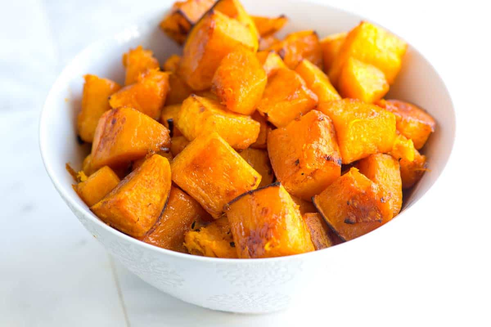

Roasted Butternut Squash

Description
Squash with a touch of brown sugar and spices so it caramelizes in the oven and becomes super flavorful!
Ingredients
- 1 large butternut squash, peeled, seeded, and cut into 1-inch cubes
- 2 tablespoons olive oil
- 2 tablespoons brown sugar
- 1/2 teaspoon ground cinnamon
- 1/2 teaspoon fine sea salt
- Dash cayenne, optional
Instructions
- Preheat your oven to 425°F (218°C). Line two large baking sheets with aluminum foil or silicone baking mats.
- Toss the butternut squash cubes with olive oil, brown sugar, cinnamon, salt, and cayenne until well coated.
- Tumble the squash onto baking sheets and spread into one layer. Try not to crowd them too much, or they will not brown.
- Roast the squash, turning once and rotating pans once, until the edges are lightly browned and centers are tender, 40 to 45 minutes. Check the squash occasionally to ensure they are not roasting quicker than expected.
Home